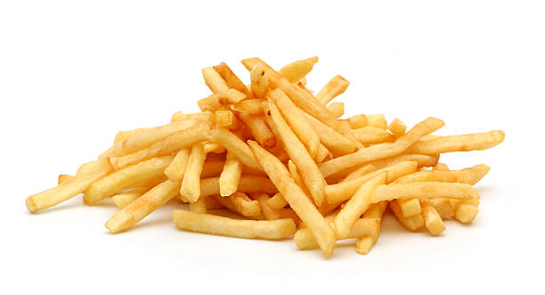

Fries

Easy and delicious fries
Ingredients
- Potatos
- white vinegar
- cooking salt
- oil
- salt
Steps
- Cut: Peel the potatoes. Cut into 6 mm / 1/4" French fries using a serrated knife.
- Keep cut fries submerged in a bowl of water to prevent them from going brown while you cut the remainder. (No need for actual soaking beyond this.)
- Rinse: Transfer potatoes to a colander and rinse under tap water for 15 - 20 seconds.
- Simmer: Place fries in a large pot with 2 litres/quarts of cold tap water, vinegar and salt. Bring to a boil over high heat then immediately reduce stove to low so the surface is rippling gently, not big bubbles. Cook for 10 minutes then carefully remove using a slotted spoon into a colander (do not tip into colander, fries will break).
- Dry 5 minutes: Spread the fries on 2 tea towel lined trays. Leave to steam dry for 5 minutes.
- Pot: Pour 3 cm / 1.2" of oil in a pot that is at least 10cm/4" high
- Heat the oil: 205°C/400°F over medium high heat.
- 10 sec pause: Lower 1/3 of Batch 1 fries into the oil using a slotted spoon. WAIT 10 seconds, add another 1/3 of the fries, wait 10 seconds, then add the remaining Batch 1 fries.
- 50 seconds fry: Fry for 50 seconds, moving them around once or twice. Then remove with a slotted spoon onto 2 paper towel lined trays, spread out in a single layer. The fries will still be white and floppy.
- RepeatFry #1 with Batches 2 and 3, ensuring the oil is back at 205°C/400°F before cooking.
- 30 minutes cool: Leaves fries to cool for 30 minutes.
- Line a large bowl for tossing
- Fry #2Heat oil to 205°C/400°F. Fry half the French fries for 4 minutes, moving them around twice, or until golden brown and crispy. Drain in the lined bowl, then repeat with remaining fries.
- Sprinkle fries with salt or seasoning or choice. Toss and Serve!
- Fries will stay crispy even once cool.